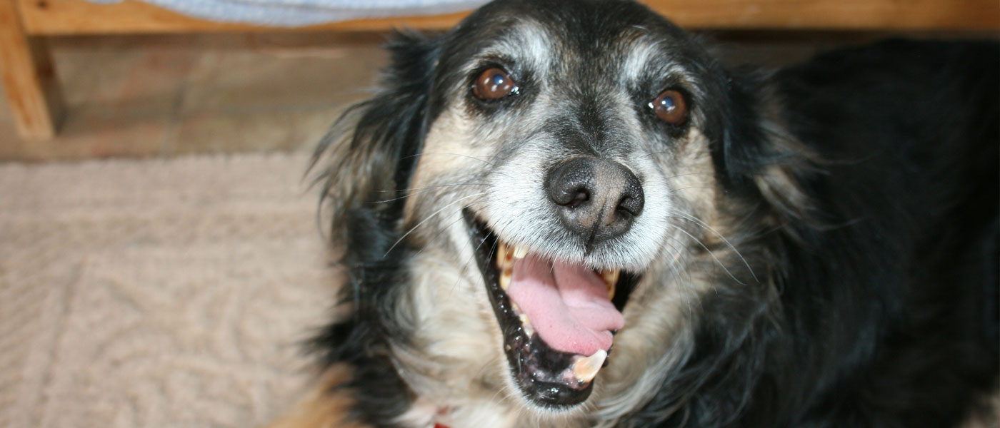
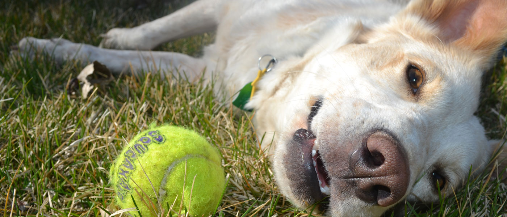

<div id="home-carousel" class="carousel slide carousel-fade" data-interval="5000" data-ride="carousel">
    <ol class="carousel-indicators">
        <li data-target="#home-carousel" data-slide-to="0" class="active"></li>
        <li data-target="#home-carousel" data-slide-to="1"></li>
    </ol>
    <div class="carousel-inner" role="listbox">
        <div class="item active">
            
            <div class="caption-container">
                <div class="carousel-caption col-md-3 col-sm-5">
                    Older dogs are wiser and more mature, but are often hard to adopt.  Nicki was one of the lucky ones.
                    <a href="#" class="btn btn-primary-pwna btn-lg btn-block">
                        <span><span>Learn more</span>about Nicki</span>
                        <i class="fa fa-chevron-right"></i>
                    </a>
                </div>
            </div>
        </div>
        <div class="item">
            
            <div class="caption-container">
                <div class="carousel-caption col-md-3 col-sm-5">
                    After six months of foster care, Willow and her cute, happy dog "smile" found her forever home.
                    <a href="#" class="btn btn-primary-pwna btn-lg btn-block">
                        <span><span>Learn more</span>about Willow</span>
                        <i class="fa fa-chevron-right"></i>
                    </a>
                </div>
            </div>
        </div>
    </div>
</div>